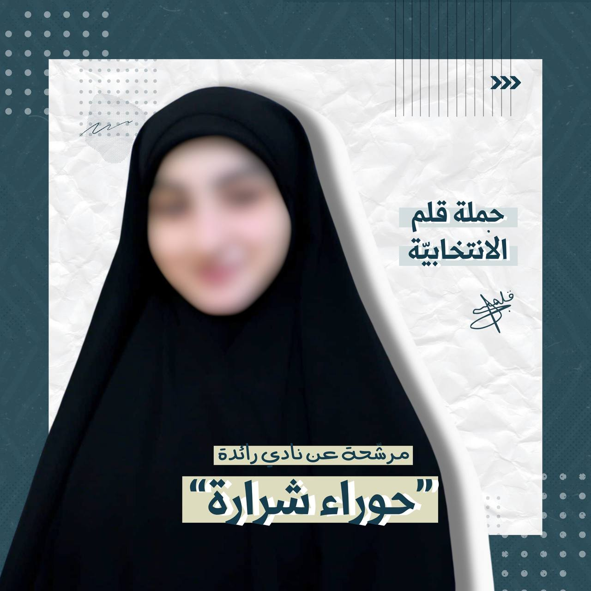
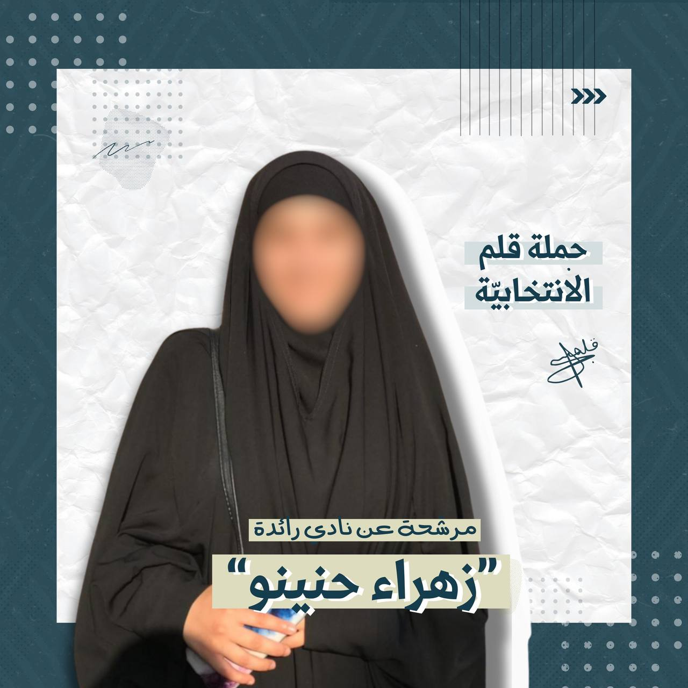
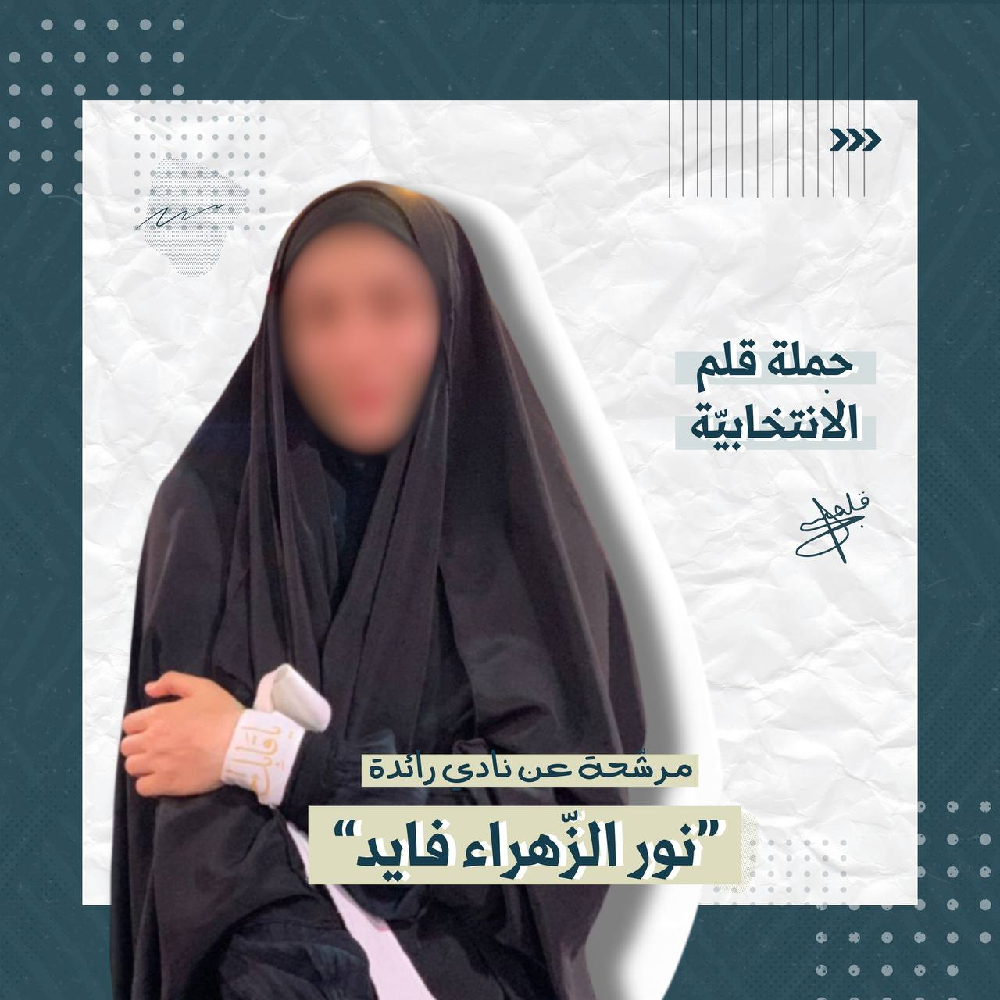
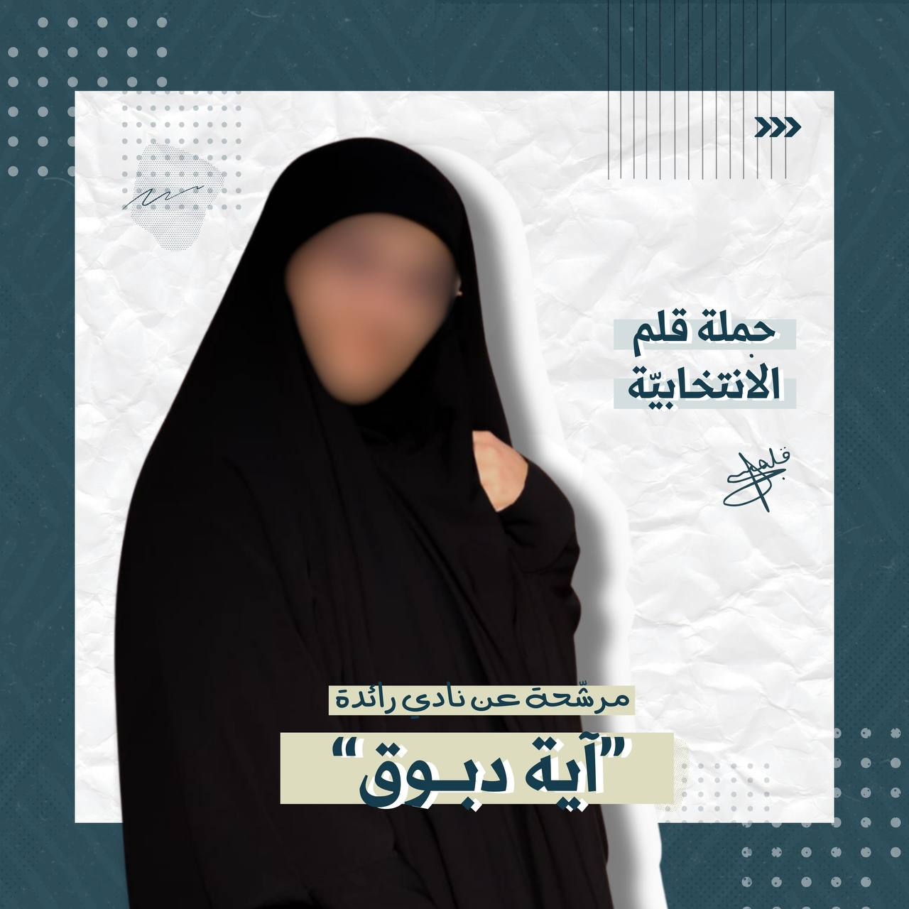
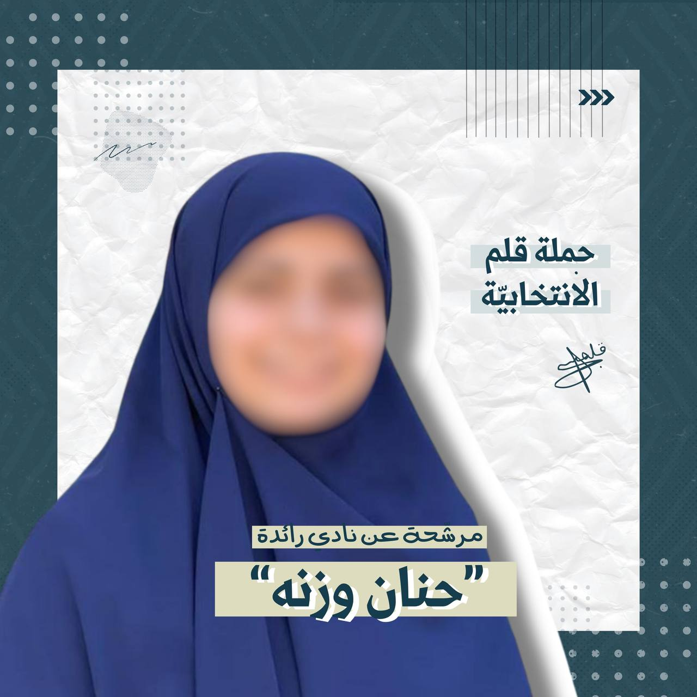

الأديان والعلوم الإنسانيّة
السّنة الثّالثة
منتسبة إلى جمعيّة كشّافة الإمام المهدي عجل الله تعالى فرجه الشريف
متدرّجة منذ مرحلته الأولى، وصولًا إلى العمل في المجال القيادي
والتدريبي
مهتمّة بالشأن الثقافي التربوي والفكري.
مطالعة نهمة وساعية في إعداد هذه النفس وبنائها للخدمة في ساحة الإسلام
المحمّدي الأصيل ونشره وإعداد الأجيال عليه.
متخصّصة في علم النفس إضافةً إلى الفلسفة وعلم الكلام، ليكون مشروع بحث
التخرّج بما يجمع بينهما لدعم الشأن التربوي الإسلامي إيمانًا بأهمية
الخوض في هذه النطاقات المعرفية ورفدها والتنظير فيها بما يتماهى مع رؤية
الولي الفقيه
معتقدةٌ بأهميّة الاهتمام بالقرآن، والتدبّر به وإدخاله في الأعمال
التربوية وتوطيد علاقة الفئة الشابة به.
تطوّعت في عدّة ميادين، وشاركت بذلك في التنسيق والتخطيط والتنفيذ؛ على
مستوى البلدة، والجامعة وغيرها، منها نادي الثّقافة والحوار ضمن الأندية
الطّلابيّة في جامعة المعارف..
نسبةً لطبيعة تخصّصي الجامعي، أجريتُ العديد من الأبحاث المرتبطة
بالمقررات الجامعيّة في مختلف المجالات: اجتماعية/ فلسفية/
قرآنية/ أخلاقية إلخ
الدّورات:
الكشفيّة:
تدرّجا من المراحل الأولى وآخرها دورة مدرّب
غير الكشفيّة:
تجويد مستوى أول
مونتيسوري منهج حياة
دروس تمهيديّة في نظريّة المعرفة
دورة نهج البلاغة منهاج الحياة
سيكودراما
تنمية التركيز والانتباه لدى الأطفال العاديين وذوي الاحتياجات
الخاصّة
دورة لغة فارسيّة مستوى أوّل
المهارات:
القراءة المركّزة
البحث، التّلخيص، التّفريغ، إعداد محتوى بحثي
خبرة في استخدام برامج microsoft

الكلية: اعلام، راديو وتلفزيون
السنة الدراسية: الثانية
ابرز الصفات:
منتسبة إلى جمعية كشافة الإمام المهدي عجل الله تعالى فرجه الشريف
وقائدة دليلات في فوج أريج الزهراء بئر العبد
متطوعة في جمعية فسيلة
متطوعة في جمعية سابقون
مهتمة في تفسير القرآن الكريم، عبر المتابعة الدائمة
اقرأ الكثير من الكتب المتعلقة بالمرأة في الإسلام، وفي الأسرة
لدي اطلاع على الكثير من الكتب التربوية ، الثقافية، والدينية
مهتمة في المواضيع الثقافية والتربوية وخصوصا المحاضرات
من علماء الدين او المدرسات والمدرسين
متعلقة في المواضيع المرتبطة بالأسرة، وبالأخص علاقة الاهل بالأطفال
وكيفية التعامل معه
اجتماعية، ولدي حركة تفاعلية، وسبل اقناع في الحوار
دورات خاضعة لها:
اعمال حرة فردية: كتصميم بوستر أو مونتاج او تصوير.
دورة قائدة
خاضعة لدورات حوزة في مجمع السيدة سمية-الحوش
شاركت في مسابقة تحدي أصدقاء الكتاب
شاركت في العديد من المشاريع الإنتاجية في كلية الإعلام في جامعة
المعارف
شاركت في معرض أرضي، في انشطة تموز، وفي العديد في التغطيات الإعلامية
شاركت في تنظيم مسرحية طريق الشمس
المهارات:
القراءة، الكتابة، تصميم بوسترات، مونتاج ، تصوير، إعداد محتوى ارشادي،
تنظيم مسرحيات، إشراف صوتيات المسرحيات،
استخدام برامج ال digital مثال : canva, inshot, cupcut, premiere,
photoshop
مؤهلات:
الاعمال التي ذكرتها سابقًا ومن مبدأ انه على الفتاة ان يكون لها مساحة
تستطيع التعبير عن الهوايات وبعض الدورات اليدوية وهي بحاجة إلى محاضرات
دينية ثقافية واجتماعية فمن هذا المنطلق وبالافكار التي لدي استطيع خدمة
هذا النادي، من خلال زيادة الوعي لدى الفتيات من جهة الثقافة ،التربية،
الامور العلمية والدينينة وكل ما يخص المرأة في الإسلام

الكلية: الإدارة، نظم المعلومات
السنة الدراسية: الثانية
ابرز الصفات:
قارئة
في سبيل التعلم للقرآن الكريم
متطوعة في نهج علي
إجتماعية
متطوعة في هيئة روح
المهارات:
القراءة
إستخدام الكمبيوتر
إستخدام برنامج visual studio code وقريباً صناعة websites
مؤهلات:
ما أراه يؤهلني للعمل في النادي هو معرفتي في التعامل مع الأشخاص من كافة
الصفات وإختلاف الشخصيات وقرائتي لأهمية المرأة في المجتمع والحفاظ على
كيانها، وتوصيل الأفكار إن شاء الله بطريقة سلسلة

الكليّة: العلوم
السّنة الدّراسيّة: الثّانية
أبرز الصّفات:
قائدة دليلات في جمعيّة كشّافة الإمام المهدي عجّل الله تعالى فرجه
الشّريف
متطوّعة في مبادرة فسيلة
مهتمّة بالإطّلاع على المواضيع الّتي تخصّ المرأة في الأسرة من المنظور
الإسلاميّ
في متابعة دائمة للمواضيع التّربويّة خصوصًا المتعلّقة بالأطفال وتربيتهم
مهتمّة بحضور اللّقاءات والمحاضرات الثّقافيّة والدّينيّة
مهتمّة بمطالعة سيرة أهل البيت عليهم السّلام
مهتمّة بمجال الصّحّة النفسيّة وأساليب تطويرها
الدّورات:
جنود وأنصار
قائدة في جمعيّة كشّافة الإمام المهدي عجّل الله تعالى فرجه الشّريف
تصاميم الصّور والفيديوهات
المهارات:
الكتابة
تصميم صور
تصميم فيديوهات (مونتاج)

كلية العلوم
سنة ثانية
أبرز الصفات:
مثابرة
مجتهدة
عاطفية
اجتماعية
متعاونة
دورات خاضعين لها:
دورة جنود
دورة قائدة كشاف
دورة متعلقة بالاختصاص(javascript)
دورة تجويد
دورة اسعافات أولية
ورش متعددة مع الكشاف
تجارب و خبرات:
أتابع دورات الكشاف المتعلّقة بالفتاة المؤمنة والتحديات الّتي تواجهها
قائدة كشفية تهتم بشؤون عناصرها
أهتم بمتابعة الصّفحات والشّخصيات الّتي تبثّ الوعي حول مختلف قضايا
المجتمع وخاصّة المرأة وواجباتها